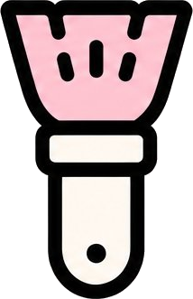
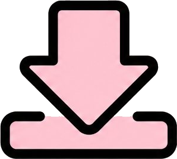
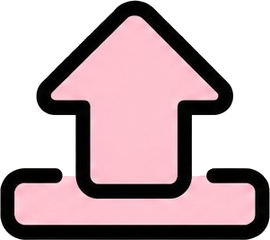

The Museum of Imperfect Creativity
An Interactive Online Exhibition — Technical Documentation
OVERVIEW
The Museum of “Imperfect” Creativity is an interactive online exhibition built around the theme of imperfection in human–machine co-creation. The project presents three parallel interpretations of a single subject — one set of AI-generated images alongside two sets of human paintings — inviting visitors to reconsider the boundary between “completeness” and “creativity” along a continuous journey of viewing, making and reflecting.
All content is organised as a single-page application (SPA): the gallery, the studio, the reflection form and the comparison result all live inside one document and are connected by view-state switching, with no page navigation and no external network requests. The project follows zero-dependency and no-build principles strictly — the source code is the final artefact, passing through no bundling, transpiling or dependency installation, and it runs by double-clicking index.html in any modern browser.
CORE JOURNEY / USER JOURNEY
- Browse — Travel along a depth track one work at a time, with a single piece on display. Each work is a stack of four paper layers — wall caption, backing sheet, frame and label plate — and the camera pushes and pulls through that depth. On a change of work a torn sheet sweeps across, and the next piece is already standing behind it.
- Transition — Clicking the icon at the end of the progress bar triggers a full-screen transition video; when it finishes, the view cuts seamlessly into the studio, creating a continuous sense of space.
- Create — Draw freely with the pencil or eraser over the pottery-shard base image. Strokes are isolated on their own layer from the base image and can be exported as a PNG at any time.
- Reflect — Use the reflection form to choose the factors that shaped the design direction, add written notes, and optionally upload a reference image.
- Compare — After submitting, the drawing is placed side by side with the two AI versions, closing the loop of human versus machine interpretation.
TECHNOLOGY
01 · ARCHITECTURE
The project introduces no framework, no UI component library and no third-party script; every feature is implemented with native browser APIs. The codebase is divided into four layers with clear boundaries and one-way dependencies:
- Structure (
index.html) — Defines the two page-level containers#page-galleryand#page-detail, the two modal dialogs and the transition video node. Dynamic content is left empty and injected by script, keeping structure decoupled from data. - Presentation (
style.css) — Holds theme variables, layout, state styles and responsive breakpoints. View switching is driven purely by theis-activestate class on the containers rather than by adding or removing DOM nodes, avoiding the performance cost of repeated reflow. - Logic (
script.js) — Carries all behavioural logic: data modelling, per-frame depth and parallax maths for the 3D stage, pointer interaction, canvas drawing and the modal state machine. - Assets (
shard-data.js) — Carries the shard base image inlined as a Base64 data URI, working around the canvas cross-origin restriction that applies under the localfile://protocol (see section 05).
FILE MANIFEST
| index.html | Structural skeleton: two page containers, two modal dialogs and the transition video node |
|---|---|
| style.css | All styling: theme variables, layout, interaction states and responsive breakpoints |
| script.js | All logic: 3D stage depth and parallax, pointer interaction, canvas drawing and the modal state machine |
| particles.js | Gallery ambience: distant bokeh, motes, glints and the cool burst on a change of work; pure canvas, click-through. A single INTENSITY knob at the top (currently 0.76; 1.0 is the original strength) sets the overall density |
| shard-data.js | Pottery-shard base image inlined as Base64 (approx. 170 KB) |
| image/ | Artwork images and icon assets, 20 files in total; image/trim/ holds 4 copies with the baked dark border cropped off |
| transition.mp4 | Transition animation from the gallery into the studio. The footage carries a baked-in pink watercolour paper background that cannot be re-rendered, so --video-hue: hue-rotate(-125deg) saturate(0.72) re-hues it at play time to match the page paper. The angle is solved from the measured page-paper colour, so it has to be re-derived whenever the paper colour changes |
| Depth mapping | z = FOCUS_Z − away · SPACING, where away = work index − camera position |
|---|---|
| Wall caption | translateZ(−380px), parallax factor +190: the chapter title sits on the furthest plane |
| Backing sheet | translateZ(−150px): a kraft sheet behind the frame, offset up and left so a torn edge shows |
| Frame (focal plane) | translateZ(0) + rotateY(−8deg): its two vertical edges differ in height, so it reads as a board standing in space |
| Label plate (foreground) | translateZ(+150px) + rotateY(−17deg), parallax factor −330, swinging opposite to the frame |
| Foreground silhouettes | Ceiling beam, side columns, floor platform and the front-row shard silhouettes — always in front of the work |
| Gallery wall | The same watercolour paper as the page, darkened one step: .room carries the texture while .room-wall adds only a translucent blue wash (an opaque fill would kill the texture outright); the ceiling light cone, narrow at the top and wide at the bottom, is the cheapest depth cue in the whole scene |
Depth never relies on blur; it relies on four things: hard-edged layering (every sheet has its own outline), shadow (the frame stacks a 12 px hard shadow for paper thickness with a 26 px soft shadow for distance from the wall), occlusion (a front-row shard silhouette bites into the frame’s lower-left corner) and parallax (the layers inside one work slide at different rates). On a change of work a torn sheet sweeps across and covers the hand-over completely — that is occlusion, not a blur.
Key parameters: lens PERSP = 900, spacing between works SPACING = 1000, lateral sweep SWEEP = 430px, near cull NEAR_CULL = 620. The torn sheet is 210% wide and travels from −120% to 120%, so it covers the stage completely between 35% and 50% of the transition (measured with getBoundingClientRect(): coverage is 1.000 at 40%, and the sheet has already left the stage at 50%); the camera crosses the midpoint at exactly 50%, which means the hand-over happens behind the sheet.
03 · INTERACTION & ANIMATION
- Unified pointer interaction — Dragging, the scroll wheel, clicking and progress-bar dragging are all built on Pointer Events (
pointerdown / pointermove / pointerup) combined withsetPointerCaptureto lock the pointer, so mouse, touch and stylus all run through a single code path. A drag shorter than 5 px is treated as a click, which prevents accidental activation. - Eased snapping — After release, or once the wheel stops, a
requestAnimationFrameloop eases the view towards the nearest work, interpolating 15% of the remaining distance each frame. Every new frame cancels the previous request, so only one animation chain is ever active; wheel-stop detection uses a 150 ms debounce so continuous scrolling is not interrupted. - Progress-bar synchronisation — The hand-drawn wavy progress bar is built from an SVG path:
getTotalLength()gives the path’s total length,stroke-dasharray / stroke-dashoffsetcontrol the proportion already browsed, andgetPointAtLength()positions the small hand icon exactly at the current progress point, keeping progress and picture in strict sync. - Reverse drag control — The hand itself can also be dragged to browse in reverse. Because the path is monotonic horizontally, the script pre-samples 200 points into a lookup table; while dragging, screen coordinates are converted to SVG coordinates using
DOMPointtogether withgetScreenCTM().inverse(), and the nearest point is selected — giving precise two-way control at low cost.
04 · CANVAS LAYERING
The studio stacks two 1200 × 800 <canvas> elements to form a physically separated “base image / strokes” two-layer structure: the lower #baseCanvas draws the white paper and the pottery-shard base image (scaled to 80% of the canvas height and centred), while the upper #drawCanvas records only the user’s strokes. The design brings three engineering benefits:
- Non-destructive erasing — The eraser uses the
destination-outcomposite mode, removing only the strokes on the upper layer without touching the base image, while the pencil uses normalsource-overblending. The two are switched by changingglobalCompositeOperation, so the base image never needs redrawing and switching is extremely cheap. - Lossless export — On export, a new offscreen canvas composites the base image and the strokes in order, after which
toDataURL('image/png')produces the output and triggers the download, guaranteeing that the exported result matches exactly what is on screen. - Coordinate consistency — Pointer coordinates are converted into the canvas’s internal pixel space via
getBoundingClientRect(), so drawing precision is unaffected by CSS scaling and each stroke lands exactly under the cursor.
05 · ASSET INLINING & CROSS-ORIGIN STRATEGY
The pottery-shard base image is not referenced as a separate image file; it is inlined in shard-data.js as Base64. This addresses the browser security policy that applies under the local file:// protocol: once a canvas has drawn a cross-origin image it is flagged as a tainted canvas, after which any call to toDataURL() throws a security exception and the user can no longer export their work. Inlining the image as a data URI makes it same-origin, preserving full export capability under the “zero-dependency, double-click-to-run” constraint.
Trade-off: roughly 170 KB of extra script size is exchanged for offline availability and export capability. For a local exhibition application of this kind, the benefit clearly outweighs the cost.
06 · RESPONSIVE ADAPTATION
The gallery uses a ResizeObserver to watch the stage size and solves for the focal plane depth (FOCUS_Z) so that a work occupies at most 76% of the available width and 78% of the height. Works therefore keep a consistent visual weight across screen resolutions, while the label never crowds the title or the bottom controls. The stylesheet adds a separate 720 px breakpoint that reduces the colour palette from nine columns to three and the type scale from two columns to one on narrow screens, keeping small displays readable.
07 · ACCESSIBILITY & USABILITY
- Every icon button carries an
aria-labelandtitle; the tool-switch buttons also maintain anaria-pressedstate so screen readers can announce the currently selected tool accurately. - Decorative graphics (the wavy progress bar, the cloud option outlines) are marked
aria-hiddento avoid redundant announcements, while content images all provide meaningfulaltdescriptions. - The outline of the cloud-shaped option cards is generated programmatically from arc segments by the script (
cloudPath()), preserving the hand-drawn feel while keeping vector crispness and lossless scaling.
DESIGN SPEC
COLORS
--paper)--rice)--rice-deep)--line)The palette builds a hierarchy from dark to light: ink carries all text and strokes, watercolour blue handles the primary colour and container backgrounds, and the warm wooden frame, kraft backing sheet and rice-paper cards sit against the cool wall to create the front-to-back contrast. The background is a sheet of blue watercolour paper — background.png is re-hued with background-blend-mode: luminosity, leaving the texture untouched. Because the texture supplies the luminance, darkening --paper alone does nothing; a deep-blue --wash layer sets the overall key instead. The wash is pinned with fixed so the page paper, the gallery wall and the studio page all read as one sheet.
BUTTON






Icon buttons are 72 × 72 px with a 16 px radius, a 2 px stroke and 10 px padding; captions are uniformly 13 px / bold / 1.4 line-height and set in full uppercase. The button background is rice-paper white #F7F3EA, shifting to #ECE6DA on hover, while the selected tool additionally lifts 4 px on a hard shadow. The submit button carries no outer frame — the icon’s own rounded square forms the button shape. This page shows the icons alone, without background fills.
TYPE SCALE
Page title #2B2222
Gallery group labels #2B2222
Pill buttons · form body #2B2222
Button captions #2B2222
Card metadata #2B2222 · 70%
Pill buttons are 46 px tall with a 999 px radius and 26 px horizontal padding. The radius system also uses 32 px (modals), 16 px (icon buttons), 14 px (inputs) and 4 px (picture frames).